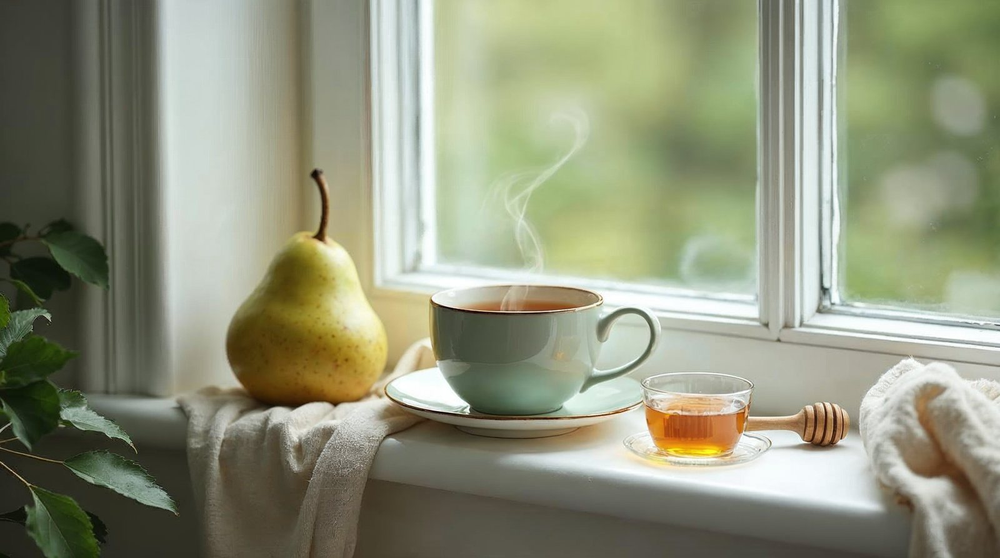
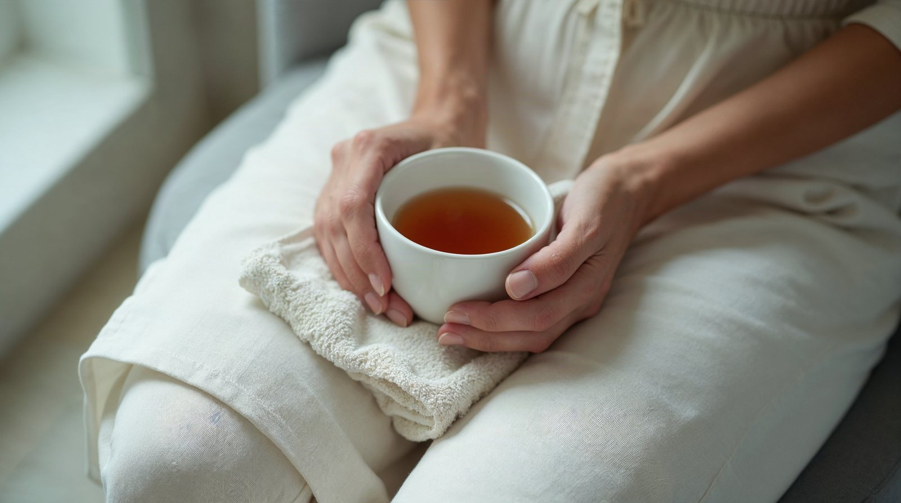
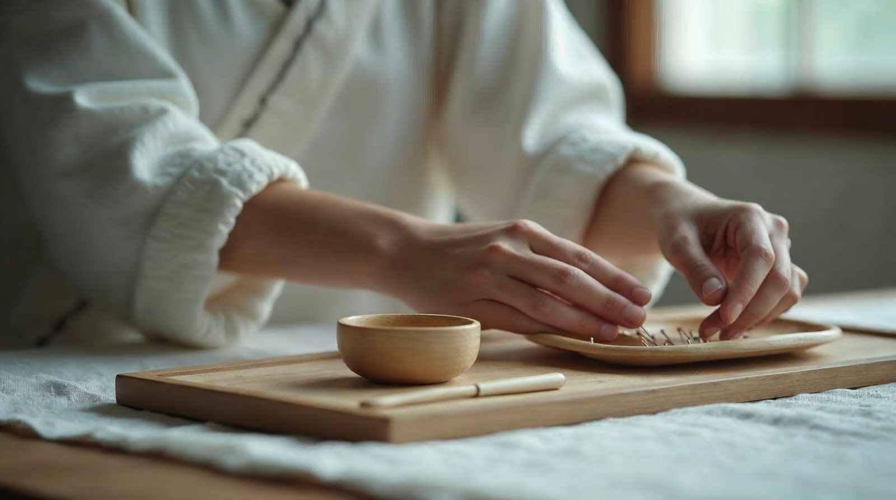
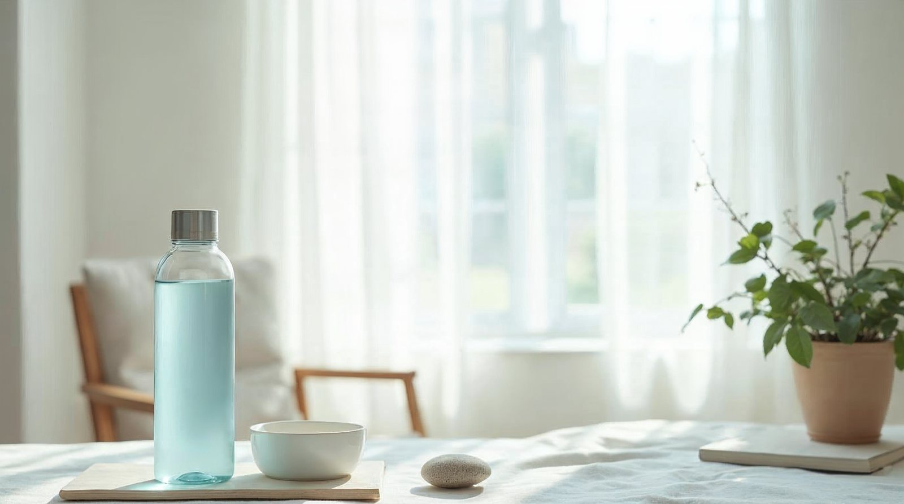
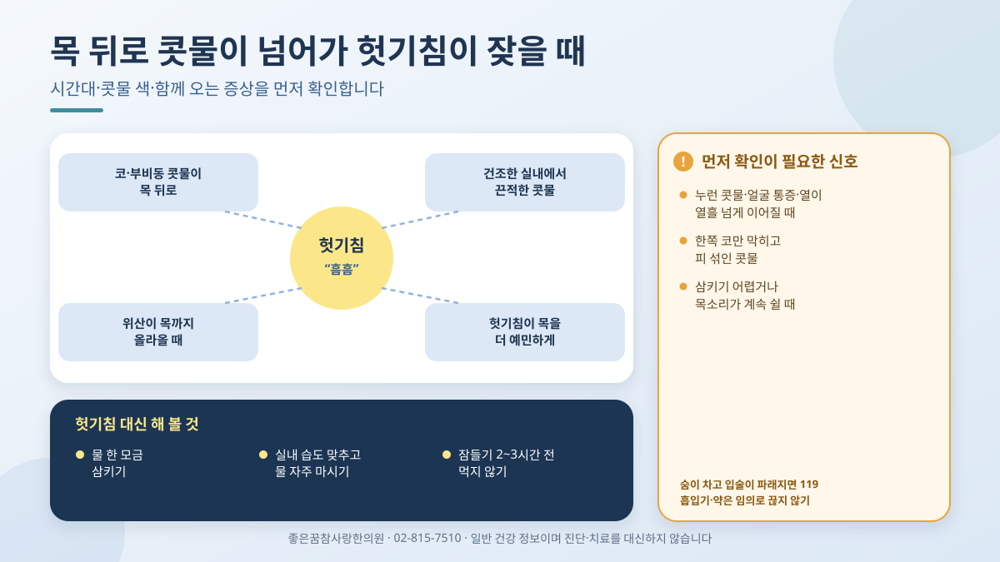

이종호 한의사 감수좋은꿈참사랑한의원 대표원장 (한의사 면허번호 19769)발행 2026-11-23 · 수정 2026-11-26
이 글의 차례
- 왜 이런 불편이 생길 수 있나요
- 왜 평소엔 몰랐던 콧물이 느껴질까요?
- 비슷한 다른 원인과는 어떻게 구분하나요?
- 먼저 이렇게 여쭙니다
- 스스로 점검해 보세요
- 상황별 예시
- 일상에서 먼저 해 볼 수 있는 것
- 헛기침의 고리는 어떻게 끊을까요?
- 코는 어떻게 다루면 좋을까요?
- 사무실과 침실 공기는 어떻게 맞출까요?
- 식사와 잠자리는 어떻게 챙길까요?
- 회의와 통화가 많은 날은 어떻게 할까요?
- 계절에 따라 무엇이 달라질까요?
- 마시는 것은 무엇을 고르면 좋을까요?
- 자주 하는 오해는 무엇인가요?
- 한의학에서는 목 뒤 콧물을 어떻게 바라보나요?
- 한의원에서 함께 살필 수 있는 경우
- 첫 진료는 어떤 순서로 진행되나요?
- 다시 오셨을 때는 무엇을 비교하나요?
- 얼마나 지켜보고 언제 상담할까요
- 이렇게 기록해 오시면 상담이 쉬워집니다
- 이런 증상은 먼저 확인이 필요합니다
목 뒤로 콧물이 넘어가 헛기침을 자꾸 하게 되는 것은 비염이나 부비동 상태, 건조한 실내, 위산 역류가 목을 자극하는 경우가 많아, 증상이 심한 시간과 콧물 색, 함께 오는 증상을 먼저 확인합니다. 회의 중에도 통화 중에도 목에 뭔가 걸린 듯해 '흠흠' 헛기침을 계속하게 되면 본인도 신경 쓰이고 주변 눈치도 보여 불편이 큽니다.
아침에 일어나면 목 안쪽에 끈적한 것이 붙어 있는 느낌이 들고, 뱉어 내려 해도 잘 나오지 않아 몇 번이고 목을 가다듬게 됩니다. 가족이나 동료가 "감기 걸렸어?" 하고 물을 만큼 헛기침이 잦아지면, 몸보다 마음이 먼저 지치기도 합니다.
저는 이 불편을 볼 때 목만 보지 않습니다. 콧물이 어디서 만들어져 왜 목으로 넘어가는지, 그리고 그 느낌을 더 크게 만드는 공기와 식사, 습관이 무엇인지를 함께 찾아야 헛기침의 고리를 풀 수 있기 때문입니다.
왜 이런 불편이 생길 수 있나요
- 코와 코 주변 빈 공간(부비동)에서 만들어진 콧물이 목 뒤로 흘러 목을 자극할 수 있습니다.
- 건조한 실내에서는 콧물이 끈적해져 목에 더 걸린 느낌이 듭니다.
- 위산이 목까지 올라오면 목에 이물감과 헛기침이 생기기도 합니다.
- 헛기침을 자주 하면 목이 더 예민해져 다시 헛기침을 부르는 흐름이 생깁니다.
왜 평소엔 몰랐던 콧물이 느껴질까요?
사실 코는 하루 종일 콧물을 만들고, 그 대부분은 목 뒤로 넘어가 우리가 모르는 사이 삼켜집니다. 평소에는 묽고 양이 적어 느끼지 못하다가, 양이 늘거나 끈적해지면 목에 걸리는 느낌으로 알아차리게 됩니다.
비염이 있거나 감기를 앓고 난 뒤에는 콧물 양이 늘고, 건조한 공기 속에서는 수분이 날아가 끈적해집니다. 이렇게 진해진 콧물이 목 뒤쪽 벽을 타고 천천히 흐르면 목은 그것을 이물질로 여겨 헛기침으로 밀어내려 합니다.
헛기침이 몇 주씩 이어지면 목 안쪽이 예민해져, 콧물이 조금만 넘어가도 간질거리는 상태가 됩니다. 그래서 콧물을 줄이는 일과 함께, 예민해진 목을 쉬게 하는 일도 함께 필요합니다.
비슷한 다른 원인과는 어떻게 구분하나요?
- 아침에 특히 심하고 코를 훌쩍이거나 들이마시는 습관이 함께 있다면, 콧물이 넘어가는 쪽을 먼저 생각합니다.
- 식사 뒤나 누웠을 때 심해지고 속쓰림, 신물, 트림이 함께 있다면 위산이 목까지 올라오는 역류를 함께 살핍니다.
- 콧물은 거의 없는데 긴장하는 자리에서만 목이 막히는 느낌이 든다면, 긴장과 관련된 목 이물감과 구분해 봅니다.
- 말을 많이 한 날 목이 답답하고 목소리도 함께 탁해진다면, 목을 많이 써서 지친 경우도 함께 봅니다.
실제로는 콧물과 역류가 함께 있는 분이 적지 않습니다. 그래서 하루 중 언제, 무엇을 한 뒤 심해지는지를 차례로 여쭙니다.

먼저 이렇게 여쭙니다
- 콧물이 목 뒤로 넘어가는 느낌이 아침에 더 심한가요?
- 콧물 색이 맑은가요, 누렇거나 초록색인가요?
- 얼굴(광대뼈, 이마)이 묵직하거나 아픈가요?
- 속쓰림이나 신물이 함께 있나요?
- 건조한 사무실이나 난방이 강한 곳에서 더 심한가요?
- 코를 자주 풀거나 들이마시는 습관이 있나요?
스스로 점검해 보세요
- 하루에 헛기침을 스무 번 넘게 하는 것 같나요?
- 아침에 일어나 첫 가래를 뱉어 내야 목이 시원해지나요?
- 코를 풀기보다 들이마셔 넘기는 습관이 있나요?
- 사무실이나 침실이 건조해 입술이 자주 트나요?
- 저녁을 늦게 먹고 바로 눕는 날이 일주일에 사흘 이상인가요?
- 커피나 탄산음료를 하루 두세 잔 넘게 마시나요?
- 헛기침을 하고 나면 잠깐 시원하다가 금세 다시 간질거리나요?
해당하는 항목이 있다면 코를 다루는 습관과 실내 공기, 저녁 식사 시간부터 하나씩 바꿔 보세요.
상황별 예시
- 예를 들어 하루 종일 난방이 강한 사무실에서 모니터를 보며 일하는 경우라면, 책상에 물컵을 두고 한 시간에 몇 번씩 마시며, 오후에 헛기침이 덜한지 적어 봅니다.
- 예를 들어 비염이 있어 아침마다 코를 훌쩍이며 출근하는 경우라면, 일어나 코를 부드럽게 헹구고 한쪽씩 풀어 낸 날과 그렇지 않은 날의 헛기침을 비교해 봅니다.
- 예를 들어 야근 뒤 밤늦게 라면이나 치킨을 먹고 바로 잠드는 일이 잦은 경우라면, 저녁 시간을 앞당긴 주와 그렇지 않은 주의 아침 목 상태를 나눠 적어 봅니다.
- 예를 들어 회의나 발표가 있는 날 유난히 헛기침이 늘어난다면, 그날의 긴장과 말한 시간, 마신 물의 양을 함께 적어 둡니다.
- 예를 들어 감기를 앓고 난 뒤부터 이런 느낌이 시작된 경우라면, 감기가 끝난 날을 기준으로 몇 주째인지 세어 두고 콧물 양이 줄어드는지 살펴봅니다.

일상에서 먼저 해 볼 수 있는 것
- 미지근한 식염수로 코를 부드럽게 헹구기(방법은 약사에게 확인)
- 실내 습도를 맞추고 물 자주 마시기
- 잠들기 전 2~3시간은 먹지 않기
- 헛기침 대신 물을 한 모금 삼키는 습관 들이기
- 말을 많이 하기 전에 물을 한두 모금 마셔 목 적시기
헛기침의 고리는 어떻게 끊을까요?
헛기침은 잠깐 시원하지만 목 안쪽을 세게 부딪혀 더 예민하게 만들고, 예민해진 목은 다시 헛기침을 부릅니다. 이 고리를 끊으려면 헛기침이 나오려는 순간을 다른 행동으로 바꿔 주는 것이 도움이 됩니다.
목이 간질거리면 물을 한 모금 머금었다 천천히 삼키거나, 입을 다문 채 침을 한 번 꿀꺽 삼켜 보세요. 코로 천천히 숨을 들이쉬고 내쉬는 것도 방법입니다. 처음에는 의식해야 하지만, 며칠 지나면 손이 먼저 물컵으로 가는 습관이 생깁니다.
작은 물병을 늘 손 닿는 곳에 두세요. 물을 마실 때마다 헛기침 한 번을 아꼈다고 생각하면 마음도 조금 가벼워집니다. 회의실, 차 안, 침대 머리맡처럼 헛기침이 잦은 자리마다 물이 있으면 고리를 끊기가 한결 쉽습니다.
코는 어떻게 다루면 좋을까요?
콧물을 들이마셔 넘기는 습관은 목 뒤로 흐르는 양을 늘립니다. 콧물이 느껴지면 한쪽 콧구멍을 막고 다른 쪽을 부드럽게 풀고, 반대쪽도 같은 방법으로 푸세요. 양쪽을 한꺼번에 세게 풀면 귀가 먹먹해질 수 있습니다.
식염수로 코를 헹굴 때는 미지근한 물을 쓰고, 고개를 살짝 숙인 채 천천히 흘려보내세요. 아침에 일어나서, 혹은 외출하고 돌아와서 하루 한두 번이면 충분하고, 쓰는 통과 기구는 매번 깨끗이 씻어 말려 두세요. 헹군 뒤에는 남은 물을 부드럽게 풀어 내고 바로 눕지 않는 것이 좋습니다.
사무실과 침실 공기는 어떻게 맞출까요?
콧물이 끈적해지는 것을 막으려면 공기가 너무 마르지 않게 해야 합니다. 실내 습도는 40~60% 정도를 목표로 하고, 습도계를 두어 실제 숫자를 확인해 보세요.
사무실에서는 가습기를 두기 어렵다면 물컵이나 젖은 손수건을 책상에 두는 것도 방법입니다. 난방기나 에어컨 바람이 얼굴로 바로 오지 않게 자리나 바람 방향을 조정해 주세요. 침실은 잠들기 전 짧게 환기한 뒤 습도를 맞추고 주무세요.
식사와 잠자리는 어떻게 챙길까요?
위산이 목까지 올라오는 것도 목 뒤 이물감을 키우는 원인이 될 수 있습니다. 저녁은 잠들기 2~3시간 전에 마치고, 과식이나 기름지고 매운 음식, 늦은 시간의 커피와 술은 줄여 보세요.
잠자리에서는 베개를 조금 높여 상체를 살짝 세우면 콧물이 목 뒤로 고이는 양도 줄고 신물이 올라오는 것도 덜하다는 분이 있습니다. 식사 뒤 바로 소파에 기대어 눕는 습관도 줄여 주세요.
회의와 통화가 많은 날은 어떻게 할까요?
말을 많이 해야 하는 날일수록 목이 마르고, 마른 목에는 콧물이 더 걸린 듯 느껴집니다. 회의나 통화 전에 물을 두세 모금 마셔 목을 적시고, 중간중간 말을 멈출 때마다 한 모금씩 마셔 주세요.
헛기침이 나오려 할 때 사람들 앞이라 참느라 애쓰다 보면 목에 더 힘이 들어갑니다. 그럴 땐 잠깐 고개를 돌려 물을 마시거나 침을 삼키는 쪽이 자연스럽고 목에도 부담이 덜합니다. 발표처럼 긴장되는 자리 전에는 어깨를 몇 번 크게 돌리고 숨을 천천히 내쉬어 몸의 힘을 먼저 빼 두세요.
계절에 따라 무엇이 달라질까요?
겨울에는 난방으로 공기가 말라 콧물이 끈적해지고, 봄과 가을 환절기에는 비염이 심해져 콧물 양이 늘어나는 분이 많습니다. 여름에는 에어컨 바람에 코가 마르면서 비슷한 느낌이 생기기도 합니다.
계절이 바뀌는 무렵이면 침실과 사무실의 습도, 에어컨과 난방기 바람 방향을 한 번씩 다시 맞춰 보세요. 해마다 같은 계절에 헛기침이 늘어난다면, 그 무렵을 달력에 표시해 두고 미리 코 헹구기와 물 마시기를 챙기는 것도 방법입니다.
마시는 것은 무엇을 고르면 좋을까요?
목이 텁텁할 때는 차가운 음료보다 미지근하거나 따뜻한 물이 콧물을 묽게 하는 데 도움이 됩니다. 한 번에 많이 마시기보다 30분에서 한 시간마다 몇 모금씩 나눠 마셔 주세요.
커피와 술은 몸의 수분을 빼앗고 속을 자극해 신물이 오르게 할 수 있어 줄여 보는 것이 좋습니다. 탄산음료는 트림과 함께 속의 것이 올라오는 느낌을 키우기도 합니다. 하루 커피를 두 잔 마셨다면 물도 그만큼 더 마시는 식으로 짝을 지어 보세요.
자주 하는 오해는 무엇인가요?
- 넘어오는 콧물은 다 뱉어야 한다는 생각: 맑은 콧물은 삼켜도 대개 괜찮고, 억지로 뱉으려고 목을 세게 긁어 올리면 목이 더 예민해질 수 있습니다.
- 헛기침은 목을 깨끗하게 해 준다는 생각: 잠깐 시원할 뿐, 자주 하면 목을 더 자극합니다.
- 코 스프레이만 뿌리면 해결된다는 생각: 종류에 따라 오래 쓰면 안 되는 제품도 있고, 공기와 식사 습관을 함께 바꾸는 것이 필요합니다.
- 목에 걸린 느낌이 계속되면 목에 큰 문제가 있을 것이라는 걱정: 이런 느낌은 콧물, 건조한 공기, 역류, 긴장처럼 흔한 원인과 얽힌 경우가 많아, 언제 심해지는지부터 차분히 모아 보는 것이 도움이 됩니다.
한의학에서는 목 뒤 콧물을 어떻게 바라보나요?
한의학에서는 끈적한 콧물과 가래가 잘 생기는 모습을 몸의 물길이 잘 돌지 않아 노폐물이 쌓이는 경향과 연결해 살피는 경우가 있습니다. 그래서 목만 보지 않고 몸이 잘 붓는지, 아침에 무거운지, 소화가 더부룩한지를 함께 여쭙니다.
반대로 콧물은 적은데 목이 마르고 화끈거리는 분은 다른 흐름으로 살펴야 할 때도 있습니다. 대표원장은 잘 먹고, 잘 싸고, 잘 자고, 마음 편하고, 몸 따뜻하게, 이 다섯 가지를 몸이 회복하는 바탕으로 보고, 헛기침으로 오신 분께도 이 바탕을 함께 살핍니다.

한의원에서 함께 살필 수 있는 경우
- 콧물이 목으로 넘어가 헛기침이 반복되는 경우 코와 목, 생활 환경을 함께 살핍니다.
- 몸이 쉽게 붓고 무거운 편인지 체질과 함께 살핍니다.
- 속이 더부룩하고 신물이 오르는 경우 소화도 이어서 여쭙니다.
좋은꿈참사랑한의원에서는 모든 분께 그렇듯 맥부터 짚으며 헛기침이 잦은 시간과 식사·잠의 흐름을 여쭙고, 필요하면 혀(설진)도 살핀 뒤 침이나 한약 상담 등 상태에 맞는 방법을 정합니다. 귀가 전에는 헛기침을 줄이는 생활 방법을 함께 정리해 드립니다.
코 스프레이나 위장약, 알레르기약을 쓰고 계신다면 이름을 알려 주세요. 처방받은 약은 처방한 의사와 상의 없이 줄이거나 끊지 마시고, 한약 상담도 지금 쓰는 약을 확인한 뒤에 진행합니다. 임신 중이거나 준비 중이라면 먼저 말씀해 주시고 산부인과와도 상의해 주세요.
첫 진료는 어떤 순서로 진행되나요?
- 모든 분의 맥을 먼저 짚고, 헛기침이 시작된 시기와 심한 시간대를 듣습니다.
- 콧물의 색과 양, 코를 다루는 습관, 비염이나 최근 감기 여부를 여쭙니다.
- 저녁 식사 시간, 속쓰림과 신물, 커피·술 습관, 일하는 곳과 침실의 공기를 확인합니다.
- 상태에 맞는 방법을 정한 뒤, 다음 진료까지 바꿔 볼 습관과 기록할 것을 함께 정합니다.
다시 오셨을 때는 무엇을 비교하나요?
두 번째 진료부터는 다시 맥을 짚고, 그사이 헛기침이 잦았던 날과 덜했던 날의 기록을 나란히 봅니다. 코를 헹군 날, 저녁을 일찍 먹은 날, 물을 자주 마신 날이 헛기침과 어떻게 맞물렸는지 함께 찾아봅니다.
지키기 어려웠던 습관이 있다면 하루 일정에 맞게 다른 방법으로 바꿀 수 있는지 함께 고민합니다. 예를 들어 저녁을 일찍 먹기 어려운 날이 많다면 저녁 양을 줄이고 식사 뒤 바로 눕지 않는 쪽으로 바꿔 보는 식입니다.
얼마나 지켜보고 언제 상담할까요
코 다루는 습관과 실내 습도, 저녁 식사 시간을 바꾼 뒤 2~3주 정도 헛기침 횟수와 시간대를 적어 보세요. 그래도 일상 대화나 업무가 불편할 만큼 헛기침이 이어지거나 잠을 설친다면 상담을 받아 보시기를 권합니다.

이렇게 기록해 오시면 상담이 쉬워집니다
- 헛기침이 잦은 시간대와 상황
- 콧물 색과 양의 변화
- 저녁 식사 시간과 속쓰림 여부
- 쓰고 있는 코 스프레이나 약 이름
- 코 세척을 한 날과 하지 않은 날의 차이
하루를 오전, 오후, 저녁으로 나눠 헛기침이 '많음·보통·적음' 가운데 어디였는지 표시해 두세요. 그 옆에 그날 저녁 식사 시각을 적어 두면, 콧물 쪽인지 역류 쪽인지 흐름을 가늠하는 데도 도움이 됩니다.
'흠흠' 소리에 스스로 움츠러드는 날이 줄어들도록, 오시면 헛기침이 가장 잦았던 하루부터 함께 짚어 보겠습니다.
이런 증상은 먼저 확인이 필요합니다
- 누런 콧물과 얼굴 통증이 열흘 넘게 이어지거나 열이 높게 나는 경우
- 한쪽 코만 막히고 피 섞인 콧물이 나는 경우
이런 신호가 있으면 한의원보다 가까운 병원이나 응급실을 먼저 찾으세요.

여쭙는 것
- 콧물이 목 뒤로 넘어가는 느낌이 아침에 더 심한가요?
- 콧물 색이 맑은가요, 누렇거나 초록색인가요?
- 얼굴(광대뼈, 이마)이 묵직하거나 아픈가요?
생활에서 해 볼 것
- 미지근한 식염수로 코를 부드럽게 헹구기(방법은 약사에게 확인)
- 실내 습도를 맞추고 물 자주 마시기
- 잠들기 전 2~3시간은 먹지 않기
한의원에서 함께 살필 것
- 콧물이 목으로 넘어가 헛기침이 반복되는 경우 코와 목, 생활 환경을 함께 살핍니다.
- 몸이 쉽게 붓고 무거운 편인지 체질과 함께 살핍니다.
- 속이 더부룩하고 신물이 오르는 경우 소화도 이어서 여쭙니다.
먼저 확인이 필요한 신호
- 누런 콧물과 얼굴 통증이 열흘 넘게 이어지거나 열이 높게 나는 경우
- 한쪽 코만 막히고 피 섞인 콧물이 나는 경우
한눈에 보는 표
| 구분 | 핵심 |
|---|---|
| 여쭙는 것 | 콧물이 목 뒤로 넘어가는 느낌이 아침에 더 심한가요? 콧물 색이 맑은가요, 누렇거나 초록색인가요? |
| 생활에서 해 볼 것 | 미지근한 식염수로 코를 부드럽게 헹구기(방법은 약사에게 확인) 실내 습도를 맞추고 물 자주 마시기 |
| 한의원에서 함께 살필 것 | 콧물이 목으로 넘어가 헛기침이 반복되는 경우 코와 목, 생활 환경을 함께 살핍니다. 몸이 쉽게 붓고 무거운 편인지 체질과 함께 살핍니다. |
| 먼저 확인이 필요한 신호 | 누런 콧물과 얼굴 통증이 열흘 넘게 이어지거나 열이 높게 나는 경우 한쪽 코만 막히고 피 섞인 콧물이 나는 경우 |
자주 묻는 질문
코 세척은 매일 해도 되나요?
순한 식염수로 하는 세척은 대체로 무리가 없지만, 귀가 먹먹하거나 아프면 멈추세요.
헛기침을 참는 게 좋나요?
헛기침은 목을 더 자극할 수 있어 물을 삼키는 방법으로 바꿔 보시기를 권합니다.
역류와도 관련이 있나요?
위산이 목까지 올라오면 이물감과 헛기침이 생길 수 있어 식사 시간과 속쓰림도 함께 여쭙니다.
넘어오는 콧물은 뱉어야 하나요, 삼켜도 되나요?
맑은 콧물이 넘어가는 것은 삼켜도 대개 괜찮습니다. 색이 누렇거나 피가 섞이면 진료 때 꼭 알려 주세요.
우유를 마시면 가래가 늘어나나요?
우유를 마신 뒤 목이 텁텁하다고 느끼는 분이 있지만, 사람마다 다릅니다. 마신 날과 아닌 날의 목 상태를 며칠 적어 보면 나에게 맞는지 가늠할 수 있습니다.
좋은꿈참사랑한의원은 재진 때 지난번 이야기부터 이어서 여쭙니다. 진료시간과 예약은 오시는 길에서 확인하세요.
어디서 상담받을 수 있나요?
좋은꿈참사랑한의원은 서울 동작구 만양로2길 2 신성빌딩 3층·5층(서울 동작구 상도동, 7호선 상도역 3번 출구 근처)에 있습니다. 한의사 3명(이종호 대표원장, 조영기 수석진료원장, 정원영 진료원장)이 진료합니다. 진료시간은 평일 09:30~20:00(점심 13:00~14:00), 토·일·공휴일 09:30~15:00이며, 방문 전 전화로 확인을 권합니다. 예약은 네이버 예약, 카카오톡 상담, 전화 02-815-7510로 받습니다.
이 글은 일반적인 건강 정보이며 개인의 진단이나 치료를 대신하지 않습니다. 증상이 있거나 복용 중인 약이 있다면 진료를 통해 확인하세요. 치료 효과는 개인마다 다를 수 있습니다.
작성 기준: 일반적으로 알려져 있는 건강 정보를 참고해 정리했습니다(대표원장 감수). 증상 기록은 1~2주 동안 하루 1회, 비슷한 시간에 적어 오시면 지난 상태와 비교하기 쉽습니다.